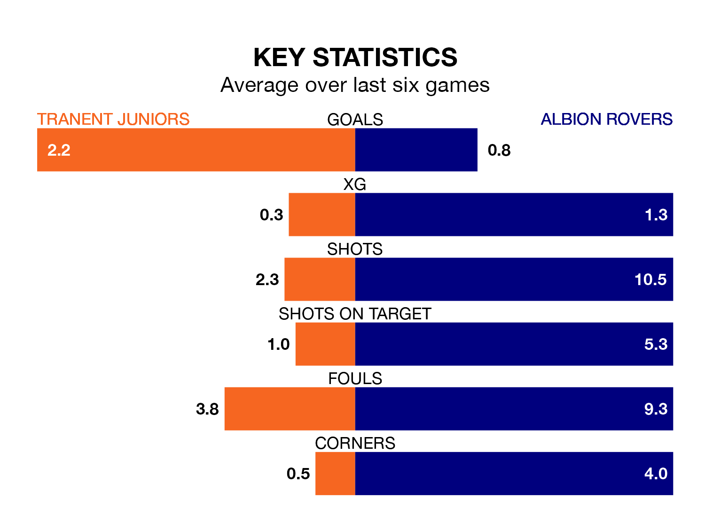

The Lowland Football League's two meanest defences go head-to-head at Foresters Park on Wednesday, when Albion Rovers visit Tranent Juniors.
No teams have conceded fewer goals than Albion to date: the away side have let in just 27 goals in 30 games.
The Belters have conceded 36 goals in 30 games, giving them the joint-second tightest back line so far this season.
Tranent Juniors are fourth in the table after 30 games, of which they have won 17 and drawn five, earning 56 points.
Albion are three places behind the Belters in seventh, with 13 wins and eight draws putting them on 47 points.
The hosts are in mixed form in the Lowland Football League, with three wins and a draw from their last six games.
With two wins and a draw over that period, Rovers' form is worse – they have taken seven points from 18, compared to Tranent Juniors's 10.
Over the last two years, Tranent Juniors and Albion have played each other twice. They won one each.
Their last meeting was on September 30, when Tranent Juniors won 3-1 away.
Tranent Juniors's last match was on March 23, a 2-1 win against Civil Service Strollers.
Albion lost 1-0 against Civil Service Strollers last time out, on March 30.
Updated: 16:41 (UTC), 04/04/24